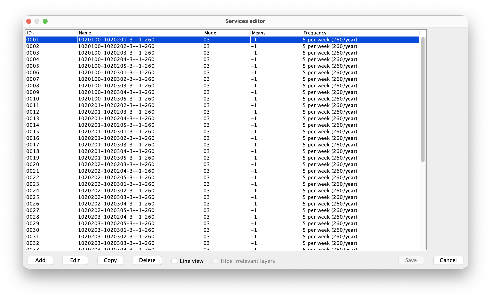
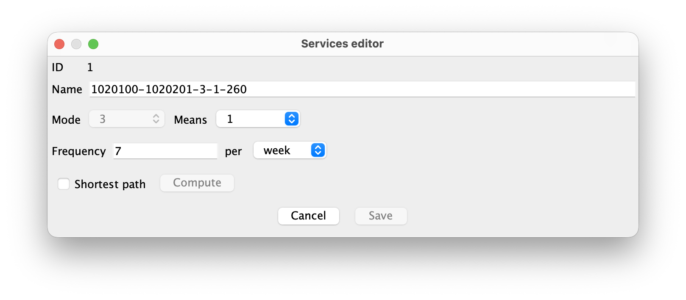
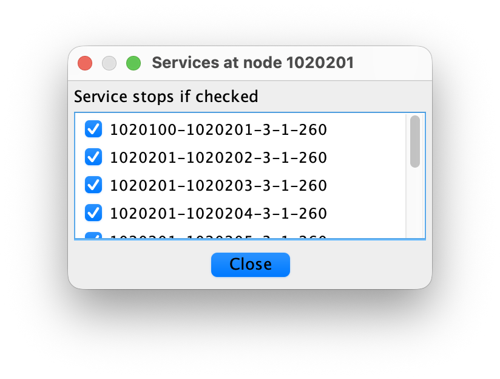
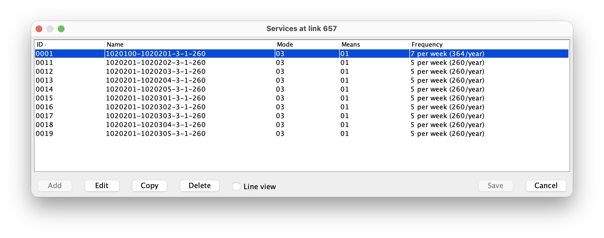

This document explains how to create, edit, and use transport services in Nodus.
A service describes a scheduled transport line on top of the physical network. A service has:
-1 for all means
supported over the complete line,When a mode/means combination is declared as service-constrained, traffic for that mode/means can only use links that belong to a defined service. This is controlled in the cost functions file with:
SERVICELINES.mode,means = trueFor example:
SERVICELINES.3,2 = trueThis constrains only mode 3, means 2. Other means of mode 3 remain
unconstrained unless they also have their own
SERVICELINES.mode,means entry.
Use -1 as a wildcard to constrain every positive means
of a mode:
SERVICELINES.3,-1 = trueA concrete entry overrides the wildcard for that mode. For example,
adding SERVICELINES.3,2 = false leaves means 2
unconstrained while the other means of mode 3 remain constrained.
For constrained combinations, the virtual network is generated per
service. A real link only receives virtual movement links for services
that use that link and whose service means matches the generated means.
A service with means -1 is expanded into separate
virtual-network layers for every concrete means supported by every link
of its complete line. All those links must be enabled. If the smallest
means value among its links is 3, the service is generated
for means 1, 2, and 3. If one of its links is disabled, no incomplete
variant of the service is generated, but the stored service definition
is retained. The generated virtual nodes and tables always contain
concrete positive means; -1 remains limited to the service
definition. Unconstrained mode/means combinations are generated in the
usual free-flow way, with service ID 0.
All concrete variants of a wildcard service share its service ID, stops, and annualized frequency. Moving from one means to another without changing service remains a transhipment, even when both means are variants of the same wildcard service.
This ordered, service-aware representation is called Virtual Network Version 4. It extends Version 3 by retaining the position of every physical-link occurrence along a service route and by representing stops and service switches explicitly. This prevents an assignment path from bypassing a selected intermediate stop, including a stop reached and left over the same connector.
Open the services editor from the Project|Edit services menu (or use F3).

The upper table lists the existing services. The columns are:
-1 means
all means supported over the complete line,Use the buttons at the bottom of the dialog to manage the list:
The Escape key has the same effect as Cancel. If an invalid service is loaded from the database, Nodus warns about it and can delete invalid services from the service tables.
When a service is added or edited, Nodus switches to the service details view.

The details view lets you edit the name, means, and frequency. The
service ID is assigned automatically. The means list uses the same
wildcard convention as the node-rules dialog: -1 means all
means supported over the complete line. The details view also activates
line editing on the map and switches the map to selection mode.
When a new service is added, Shortest path is checked by default. The checkbox remains enabled until the first route node is selected, so it can be unchecked if the service must be edited manually. During node selection it is disabled to keep the workflow mode stable.
When an existing service is edited, Shortest path is unchecked by default. Leave it unchecked to modify the existing line manually, or check it to replace the whole route with a newly computed shortest-path line. The existing service name, frequency, mode, and means are kept when Shortest path is checked.
To define or edit a service line manually:
-1 and the means
available for that mode.To create or replace the service line from a computed shortest path:
-1,
the route is computed on means 1, which has the widest link
availability, and the completed service is then made available to all
means supported over every link of that route.The service editor displays the number of selected route nodes. The full ordered node sequence is printed in the service log. The selected intermediate nodes are routing waypoints and stops. The service stops created by this workflow are all the selected nodes.
The Save button is enabled only when the edited fields are valid, the service has at least one link, and there are unsaved detail changes. When Save is pressed, Nodus validates the full service line. A valid service line must satisfy these rules:
-1, the supported range is derived from the complete
line,The first link must be connected to at least one node where operations are possible. A service line can also end only at nodes where operations are possible. If a link is removed, stop nodes that are no longer touched by the service are removed from the service.
The Escape key or Cancel button leaves the service details view. If the details contain unsaved changes, Nodus asks whether to discard them or save them. Saving at this level still only applies the service to the pending service list; the SQL tables are written by the main services editor Save button or by choosing Save changes when closing the list.
A stop node is a node where a service is allowed to stop. It is not
defined directly by the node tranship field. It is stored
separately in the services stop table.
To edit stop nodes:

If the fields editor is closed with Cancel or Escape, the staged stop changes are discarded.
For a node, the button is enabled only when the node allows operations and at least one service passes through the node. It opens the "Services at node xxx" dialog, whose list is headed "Service stops if checked". This dialog is used to mark whether each passing service is allowed to stop there.
For a link, the button is enabled only when at least one service uses the link. It opens the "Services at link xxx" dialog. This dialog lists the services that use the link. Selecting a service in the list highlights it on the map.

The Services button does not edit the shape geometry. Node stop edits are staged in the DBF editor, then stored in SQL service tables when the fields editor is saved.
The node tranship field controls which operations are
allowed at a node. The fields editor offers these operation types:
| Code | Meaning |
|---|---|
| 0 | No operation |
| 1 | All operations |
| 2 | Transhipment only |
| 3 | Loading/unloading only |
| 4 | Service change only |
Code 4 is specific to services. It means that traffic may switch from one service to another service of the same mode/means at this node, provided that both services also stop at the node.
Examples:
tranship = 4 allows service changes, but does not make
the node a loading/unloading point.tranship = 1 allows loading/unloading, transhipment,
and service changes.tranship = 3 allows loading/unloading, but not service
changes.Codes greater than 4 are interpreted by the virtual-network code as the same operation code minus 5, but with transit links disabled at the node. For example, code 5 behaves like code 0 with transit disabled, code 6 behaves like code 1 with transit disabled, and so on.
Services add two virtual-link operation types:
stp.mode,means: cost of stopping on a service,sw.fromMode,fromMeans-toMode,toMeans: cost of switching
between services.If duration functions are used, the equivalent keys are:
stp@mode,means = ...
sw@fromMode,fromMeans-toMode,toMeans = ...The usual cost functions are still used:
mv for movement,ld for loading,ul for unloading,tr for transit,tp for transhipment between different mode/means
combinations.Stops affect generated virtual links:
stp cost/duration
function,sw cost/duration
function.A service switch may change means within the same mode. For example, a train service using an electric locomotive can switch to a service using a diesel locomotive where electrification ends, without modelling the operation as cargo transhipment. Switching between different modes remains a transhipment.
When two services of the same mode but different means meet at a node
that allows all operations, Nodus generates both alternatives: a
service-switch link using sw and a transhipment link using
tp. Their respective cost and duration functions determine
which operation an assignment may use. A node configured for service
changes only generates the sw alternative; a node
configured for transhipment only generates the tp
alternative.
The links of a service form an ordered walk. The virtual network keeps each occurrence of a physical link as a separate route state and connects only consecutive occurrences. Consequently, a route that enters and leaves a dead-end stop over the same connector must store that connector twice, and assignment traffic cannot bypass the stop.
Assignment virtual-network tables store the generated operation in
the vtype field: 0 moving, 1
transit, 2 loading, 3 unloading,
4 transhipment, 5 service switch, and
6 stop. The virtual-network drawing uses this field to
distinguish stop links from transit links. For older tables without
vtype, the drawing derives stops from the current
service-stop table.
When traffic switches service, the cost parser sets the
FREQUENCY variable to the annualized frequency of the
destination service. This allows the sw cost or duration
function to include a waiting-time component. For links that do not
change service, FREQUENCY is set to 0.
The bundled CreateShortestPathServicesFromOD.groovy
script can generate an initial set of service lines from an OD matrix.
Run it from the Nodus Groovy console while the project containing the
matrix and physical network is open.
Before running the script, edit these variables near the beginning of the file:
odTableName: name of the OD matrix table,mode: mode used by the generated services and their
shortest paths,means: means used by the generated services and their
shortest paths; use -1 for all means,frequencyPerWeek: weekly frequency, which the script
converts to the annual frequency stored by Nodus,previewOnly: optional dry-run switch that leaves the
service tables unchanged.For each distinct unordered origin-destination pair, the script computes the shortest physical path for the selected mode and means. Multiple commodity groups for the same pair do not create duplicate services, and reverse relations such as A-B and B-A are represented by one service. The lower node ID is used first so that the generated name remains stable:
origin-destination-mode-means-annualFrequencyOnly the origin and destination are initially marked as stops. Additional stops can be selected later with the Services button in the node fields editor. If service tables already exist, the script asks whether the generated services must be added, whether the currently loaded services must first be cleared, or whether the operation must be canceled.
The script uses the public ServiceHandler API to create
routes and calls savePendingChanges() once generation is
complete; it does not insert rows directly into the service tables. It
therefore needs no update for the ordered pathidx schema:
the handler stores every physical-link occurrence in route order and
migrates an older links table when necessary.
The script also does not create assignment virtual-network tables.
Their vtype field, including explicit service-switch and
stop types, is written later when the virtual network is generated for
an assignment.
Services are stored in three SQL tables. These tables are not part of the shapefile DBF. The default table prefix is:
<project-name>_servicesIt can be changed with the servicestableprefix project
property, that can be set in the Project|Preferences dialog. With the
default prefix, the three tables are:
<project-name>_services_header
<project-name>_services_links
<project-name>_services_stopsThe header table contains one row per service.
| Field | Type | Meaning |
|---|---|---|
id |
NUMERIC(4,0) |
Service ID |
name |
VARCHAR(30) |
Service name |
mode |
NUMERIC(2,0) |
Service mode |
means |
NUMERIC(2,0) |
Service means, or -1 for all means supported over the
complete line |
frequency |
NUMERIC(5,0) |
Service frequency |
The links table contains the links used by each service.
| Field | Type | Meaning |
|---|---|---|
id |
NUMERIC(4,0) |
Service ID |
pathidx |
NUMERIC(8,0) |
Zero-based position of this link occurrence in the ordered route |
link |
NUMERIC(10,0) |
Link ID |
When an older links table has no pathidx field, Nodus
loads its rows and rewrites the service tables once in the ordered
format.
The stops table contains the stop nodes of each service.
| Field | Type | Meaning |
|---|---|---|
id |
NUMERIC(4,0) |
Service ID |
stop |
NUMERIC(10,0) |
Node ID where the service may stop |
To create a usable service-constrained network:
SERVICELINES.mode,means = true in the cost
functions file for each constrained mode/means, or use means
-1 to constrain every means of a mode.stp and sw cost functions,
and duration functions if durations are used.